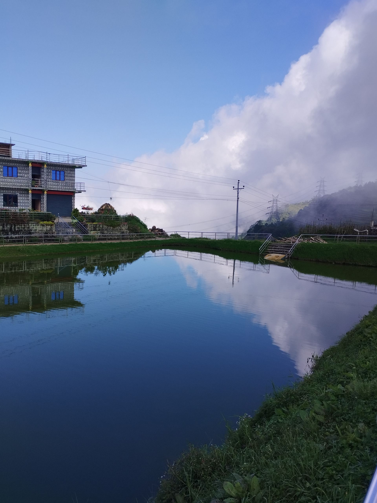
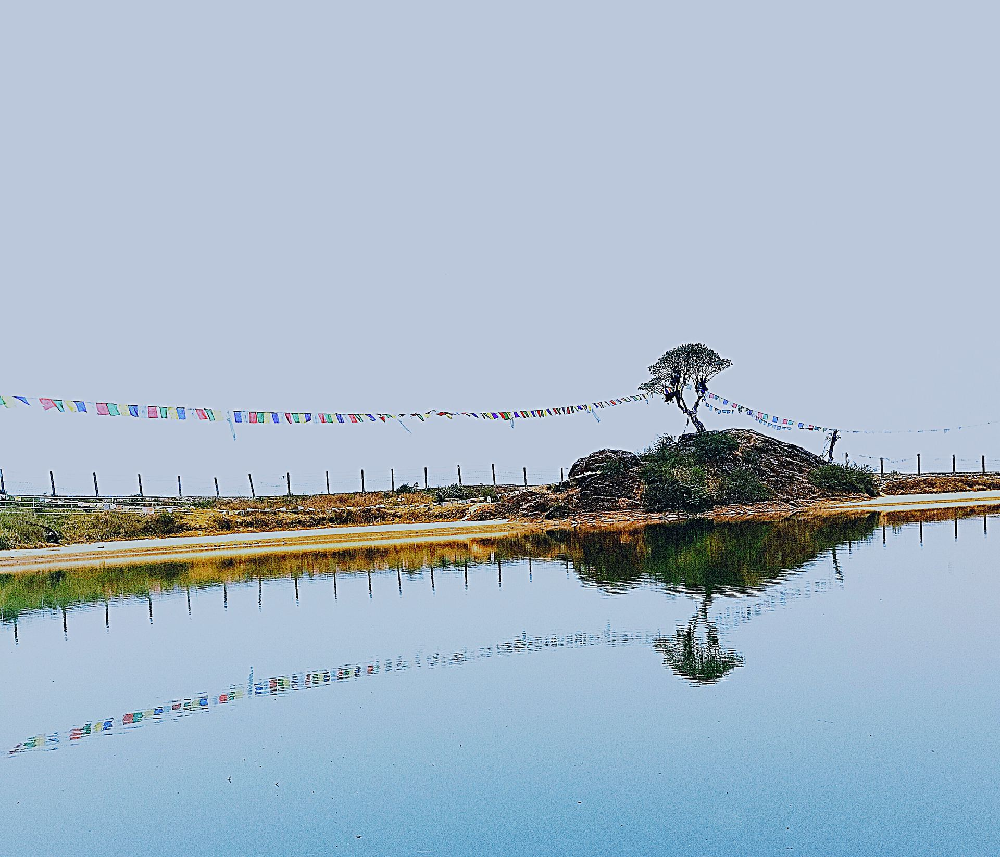
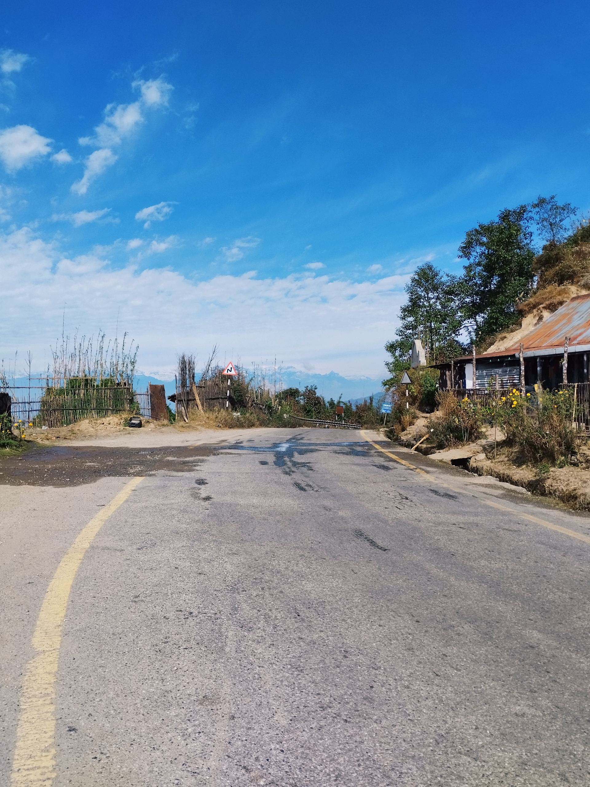
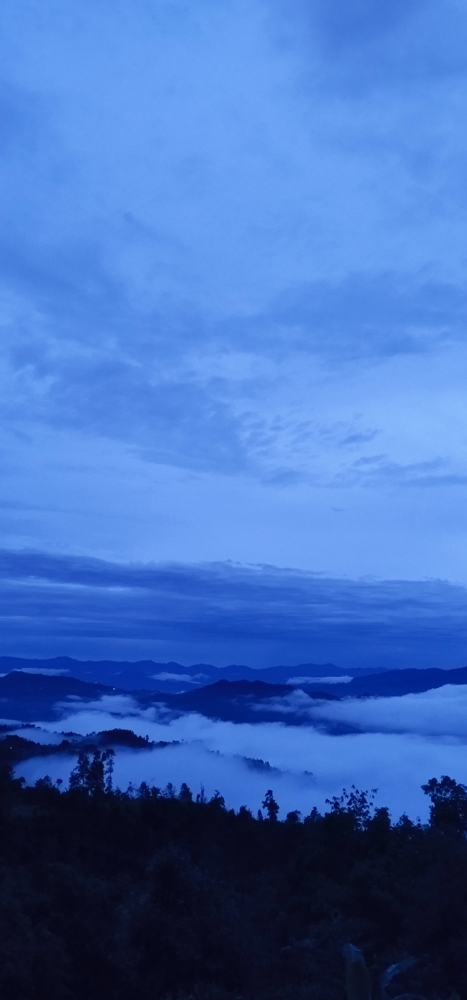
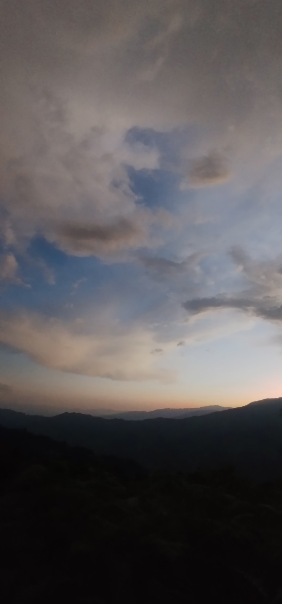
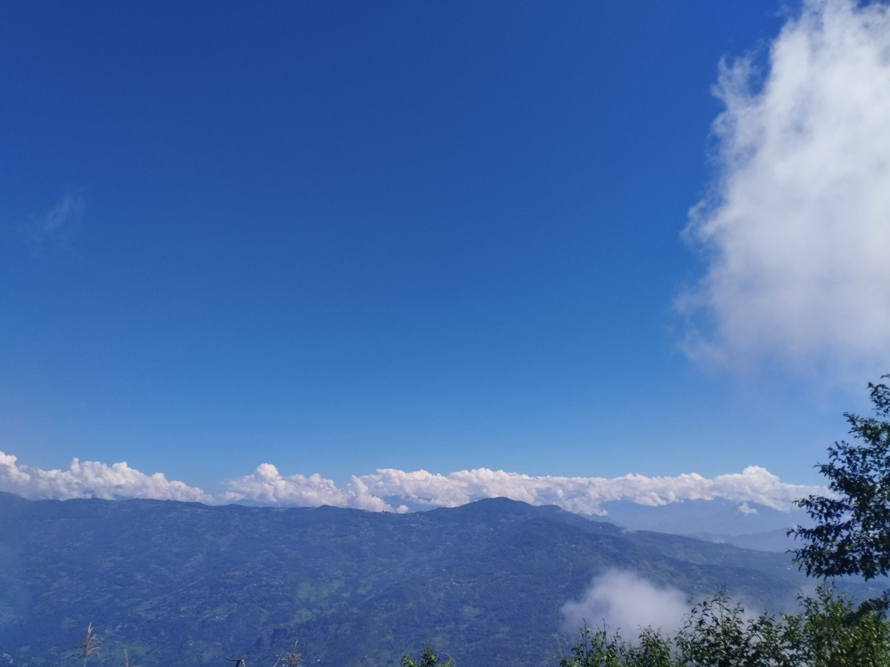

Every place I've walked into, mapped like a trail
Instead of a map with pins, here's the journal laid out the way it actually felt — a line up the ridge, with a stop for every place, every cloud bank, every photo along the way.
How high above the valley each place sits
Rough elevations for the places in this journal, from the lake near home up to the ridge above Phedap. Bars fill in as you scroll.
Six stops, one hillside
Click any photo to see it full-size. Every stop links back to its full story on the journal.

The Lake
The first stop on the walk to school — still enough to hold a perfect double of the sky before the wind picks up. Read the full story →

Gufa Pokhari
A single wind-shaped tree on a rock island, wrapped in prayer flags — the highest lake in the journal. Read the full story →

The Road
Smoother blacktop through terrain that used to take twice as long to cross — mountains on one side, sky on the other. Read the full story →

Phedap, Morning
The valley fills with cloud before the sun clears the ridge — a still, quiet sea that swallows the lower villages whole. Read the full story →

Phedap, Dusk
The ridge turns gold at the edges while the hills below have already gone dark, waiting on the day to end. Read the full story →

Tinjure Ridge
The tallest ridge in the journal, part of the Tinjure–Milke–Jaljale range that frames the whole hilltown. Back to the journal →
The full photo set
All the photos from the trail, together. Click any one to open it full-size and step through the rest.
{kind=link}
{kind=link}
{kind=link}
{kind=link}
{kind=link}
{kind=link}
{kind=link}
Elevations, seasons, and photo counts above are estimates drawn from the journal text, not a GPS log — swap in your real numbers whenever you have them and the bars and figures will resize automatically.